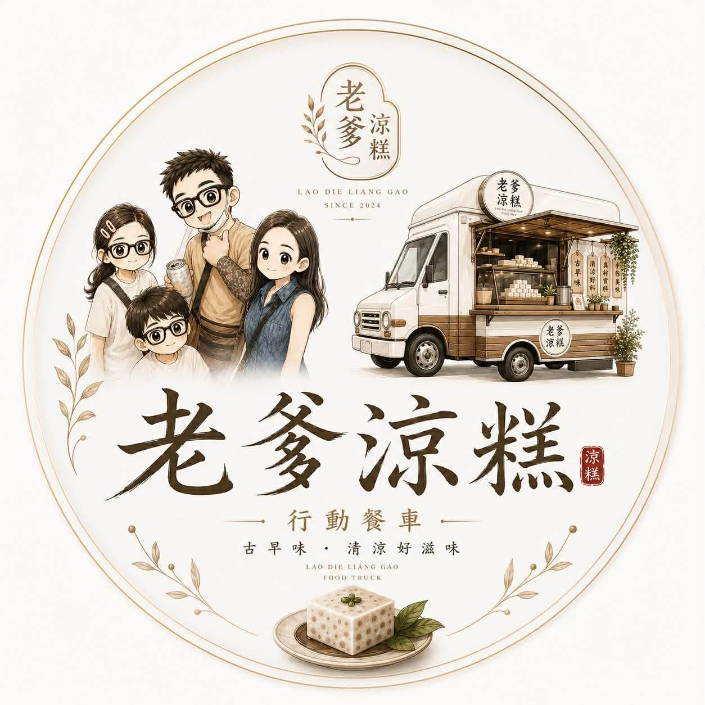
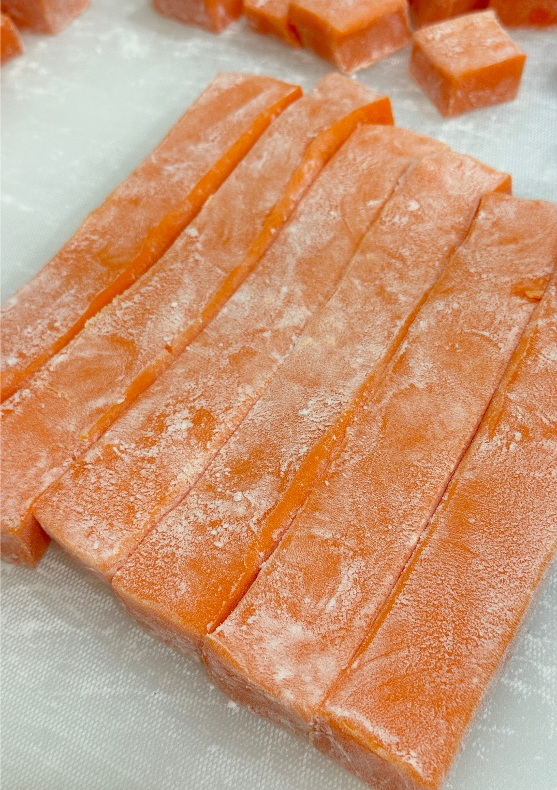

芋頭涼糕
選用香濃芋頭製作，口感柔軟滑嫩、清爽Q彈， 每一口都能品嚐自然芋香。
人氣經典
LAODIE LIANG GAO
堅持手工製作，把熟悉的傳統涼糕做出更多不同風味。 Q彈、清爽、不膩口，冷藏後享用更加冰涼滑順。 跟著老爹涼糕餐車，一起尋找今天的美味。
OUR PRODUCTS
手工製作・每日新鮮・口味依當日供應為準
選用香濃芋頭製作，口感柔軟滑嫩、清爽Q彈， 每一口都能品嚐自然芋香。
人氣經典一盒集結多種水果風味，色彩繽紛、清爽好吃。 每日製作口味可能不同，天天都有不同驚喜。
每日口味不同使用純杏仁製作，杏仁香氣濃郁自然， 口感細緻柔嫩，甜度適中、不膩口。
純杏仁製作杏仁香氣搭配綿密芋頭風味， 兩種經典香氣融合，層次豐富又順口。
雙重風味黑糖的醇厚香氣搭配芋頭， 入口Q彈滑嫩，甜香中帶有濃郁芋頭風味。
濃郁黑糖黑糖外皮搭配香甜地瓜風味， 口感柔嫩Q彈，是傳統與創意結合的特色口味。
特色口味清新的仙草香氣，口感滑嫩清爽， 冰涼享用更適合炎熱天氣。
清爽推薦香濃巧克力融入Q彈涼糕， 帶有滑順可可香氣，大人小朋友都適合。
香濃可可布丁般柔和蛋香搭配涼糕Q彈口感， 香甜滑順，風味溫和。
蛋香滑順
選用香氣濃郁的泰式奶茶製作，將泰奶特有的茶香與滑順奶香 融入Q彈涼糕中。入口冰涼柔嫩，先感受到濃郁茶香， 接著帶出香醇奶香，甜而不膩，冷藏後享用更加清爽順口。
口感：Q彈滑嫩、冰涼順口
風味：濃郁泰式奶茶香、茶香與奶香交織
特色：將經典泰式奶茶風味融入手工涼糕
建議食用：冷藏後享用風味更佳
保存方式：需冷藏保存，開封後請儘快食用
NEW 新口味ABOUT LAODIE
老爹涼糕以手工製作為核心， 不定期推出不同口味與限定商品。 實際販售品項、出攤地點及時間， 請以老爹最新公告為準。